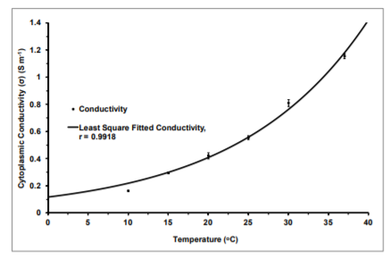

Cell volume
The data set of volume changes as well as water content of HRBCs after suspension for 5 min in the measuring solutions. The changes in cell water were found to be proportional to volume changes: the HRBC volume increases with rising of temperature. To further characterize the nature of the volume changes depending on temperature, the data on cell volume change were plotted over a range of experimental temperatures (Figure 1) and fitted to the Arrhenius-relation as a suitable model (Glaser, 2000).Figure 1: Volume changes over temperature in six different external conductivities. The Arrhenius relation
Cytoplasmic conductivity
A Plot of calculated cytoplasmic conductivities over a range of temperatures is shown in Figure 2.The data were fitted to an exponential relation using non-linear least squares methods and the asymptotic errors of the fitted parameters calculated by matrix inversion. A temperature coefficient value of k = 0.06239 ± 0.00202 (± SE, n = 24) was obtained (Figure 2). The intracellular conductivities increased by a factor of 1.866 ± 0.0377 (± SE) for every increase in temperature of 10o C and hence the Q10 of cytoplasmic conductivity vs. temperature is a typical value of ≈ 2 found in many biological systems (Glaser, 2000; Nobel, 2009). Figure 2: Cytoplasmic conductivity of HRBCs suspended in external conductivities of 1.48 S m-1 at six different temperatures. Data points are means ± SE (n = 4) so total n = 24. The line was fitted by non-linear least squares methods and the errors of the fitted parameters calculated by matrix inversion.
Cell volume
The activation energy obtained from the fit in Figure 1 indicates the electrical energy required to provide a driving force for net movements of ions across the membrane plotted over the ionic concentrations of the suspending solution. Highly negative activation energy means there is a high ionic concentration difference across the cell membrane. The fits using the direct non-linear and logtransform methods both give an activation energy of about -2.4 kJ mol-1 . This means that there was little or no ionic concentration difference across the membrane and hence change in cell volume depends only on temperature. There are two major reasons for an influence of temperature on water influx. The first is an alteration of external hydrostatic pressure as predicted by the Van’t Hoff relation. The hydrostatic pressure depends strongly on temperature and increases when the temperature is raised. The increase in external hydrostatic pressure will destroy the balance of the pressures between the two sides of the membrane. To re-balance the system, water moves down its chemical potential gradient and enters to the cell. The cell swells. Secondly, increase in temperature will decrease the viscosity of external medium and consequently increase in the hydraulic conductivity, Lp, which is a parameter determined by the viscosity of the fluid (η) and membrane characteristics including the membrane pore of radius (r), pore number (n m-2 ), membrane thickness (δ), which are related as follows (Sperelakis,1995):Cytoplasmic conductivity
The experimentally measured HRBC conductivity value at 25 o C (σ25 = 0.5566 ± 0.0146 S m-1 , ± SE, n = 4) shown in Fig. 2 agrees very well with the value of σ25 ≈ 0.5 to 0.6 S m-1 found experimentally in other studies on red blood cells using quite different methods(Seidlet al., 1999; Fuhr et al., 1986; Sudsiri, 2002; Krupa and Terlecki, 1976; Asami, 1992) and is similar to theoretical estimates by Glaser and Donath (1984). For comparison, the conductivities of the cytoplasm of bacteria, plant protoplasts and yeast cells using dielectric methods have been reported to vary from 0.1 to 1.2 S m-1 at 25o C and so the conductivity of red blood cells appears to be representative for the cytoplasm of most cells (Hölzel and Lamprecht, 1992, 1997; Suehiro et al., 2003) despite the HRBC having a large amount of haemoglobin inside the cell which might lead to the belief that its conductivity would be unrepresentative. Of more physiological relevance is the HRBC conductivity at 37o C; σ37 = 1.156 ± 0.0188 S m-1 (± SE, n = 4) in the present study which is very nearly twice the value found at the standard measuring temperature of 25 o C. Conductivity information on HRBC cells is useful information because the conductivities of most cells are not practically measureable whereas the conductivity of the HRBC is easily measured by very simple techniques and by more than one method.